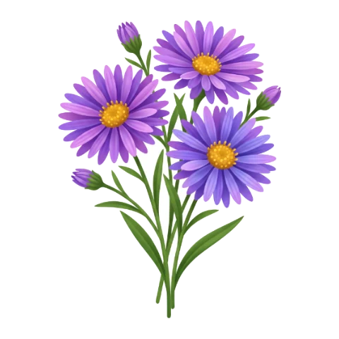

Aster

Petites marguerites mauves, adorées des abeilles.
- Floraison : d’août à octobre
- Plantation : de mars à avril
- Exposition : Plein soleil
- Arrosage : Modéré
- Rusticité : Très rustique
L’astuce : Une des dernières fleurs pour les abeilles avant l’hiver : laissez-le fleurir.
Planter pas à pas
Godet au printemps, 50 cm d’espace : il forme vite une grosse touffe.
Le savais-tu ?
Son nom veut dire « étoile » en grec.